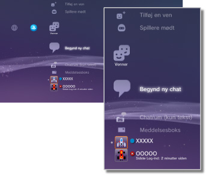

Venner > Vennerkategori
Vennerkategori
Brug af denne funktion kræver muligvis en opdatering af din System Software.
Send eller modtag beskeder, eller chat med andre PS3™-brugere over PSNSM. Brug af disse funktioner kræver oprettelse (registrering) af en Sony Entertainment Network-konto. Følgende ikoner vises under  (Venner). De viste ikoner afhænger af brugsbetingelserne.
(Venner). De viste ikoner afhænger af brugsbetingelserne.

 |
Blokeringsliste | Få vist en oversigt over personerne på din Blokeringsliste. |
|---|---|---|
 |
Tilføj en ven | Send en anmodning om at føje en person til din venneliste. |
 |
Spillere mødt | Få vist en liste over de personer, du har spillet online-spil med i PlayStation®3-format*. Vælg dette ikon for at sende en meddelelse til en spiller eller for at anmode om at tilføje en ven. |
 |
Begynd ny chat | Start en chat. |
 |
Chatrum (kun tekst) | Dette ikon vises, når der findes et chatrum til tekstchat. Hvis et nyt chatrum tilføjes, vises  . . |
 |
Stemme-/videochatrum | Dette ikon vises under tale/videochat. |
 |
Meddelsesboks | Opret en ny meddelelse, og få vist meddelelser, du har modtaget og sendt. |
 |
(dit on-line ID) | Avataren, som du har valgt for kontoen, vises her. |
|
(Vens navn) | Dette ikon markerer en person, der er med på din venneliste. Ved at vælge dette ikon kan du sende og modtage beskeder eller chatte med venner. |
| * |
Nogle spil understøtter muligvis ikke denne funktion. |
|---|
Tips
- I PS3™-systemet kaldes brugere, der er med på din venneliste, for "venner". Desuden kaldes e-mail, som du sender eller modtager under (Venner), for "meddelelser".
- Der kan tilføjes maksimalt 2.000 Venner.
- Der vises maksimalt 100 Venner.
- Hvis du har mere end 100 Venner skal du logge af og derefter logge ind igen for at opdatere den viste liste med Venner. Når du gør dette skal du også logge af alle andre enheder, hvor du er logget ind på PSNSM.
- Du kan også administrere dine Venner fra enheder som PS4™-systemer, PS Vita-systemer, smartphones eller andre enheder, der har PlayStation®App installeret.
- Der kan vises op til 50 spillere under
 (Spillere mødt). Når denne grænse er nået, vil den ældste post automatisk blive slettet, hver gang der tilføjes en ny spiller.
(Spillere mødt). Når denne grænse er nået, vil den ældste post automatisk blive slettet, hver gang der tilføjes en ny spiller. - Hvis du vil chatte via tale, skal du bruge en lydenhed til input og output, f.eks. et headset (købes separat). Hvis du vil chatte via video, skal du bruge et USB-kamera (købes separat).
- Du kan bruge et kompatibelt USB-headset/Bluetooth®-headset/USB Kamera (EyeToy™)/PlayStation®Eye eller et USB-kamera, der er kompatibelt med USB-videoklassen (UVC) på PS3™-systemet.
- Når der tilsluttes et USB-kamera via USB-hub, skal hubben understøtte USB 2.0. Hvis du bruger en hub, der ikke understøtter USB 2.0, går det ud over billedkvaliteten, eller måske vises billedet slet ikke.
- Yderligere oplysninger om understøttede ydre enheder og brug fås hos den forhandler, hvor enhederne er købt.